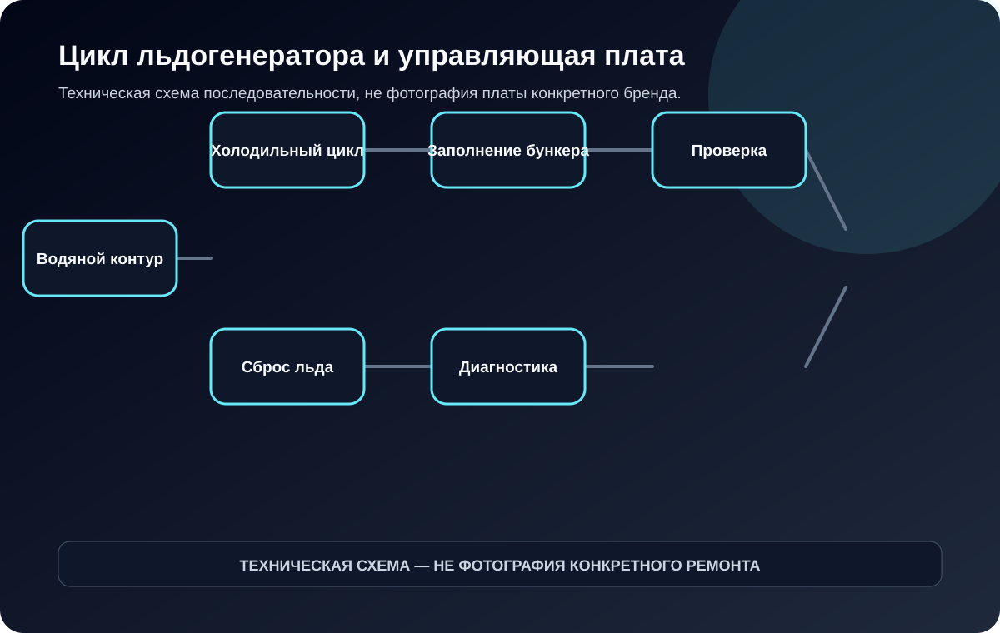

Водяной контур
Клапан, насос, уровень и качество воды влияют на запуск и длительность цикла. Плата проверяется вместе с реальным потоком и датчиками.
Контроллер льдогенератора управляет последовательностью: набор воды, циркуляция, наморозка, отделение льда и остановка по заполнению бункера. Чтобы доказать дефект платы, нужно определить, на каком шаге цикл перестал выполняться.

Не одна услуга, а диагностический маршрут
Контроллер льдогенератора управляет последовательностью: набор воды, циркуляция, наморозка, отделение льда и остановка по заполнению бункера. Чтобы доказать дефект платы, нужно определить, на каком шаге цикл перестал выполняться.
Клапан, насос, уровень и качество воды влияют на запуск и длительность цикла. Плата проверяется вместе с реальным потоком и датчиками.
Компрессор, вентилятор или водяное охлаждение, датчик испарителя и холодильный контур определяют достижение точки сброса.
Клапан горячего газа, ТЭН формы, привод или изменение режима зависит от конструкции. Проверяется выход платы и исполнительный узел.
Оптический, механический или температурный датчик может останавливать аппарат ложно из-за загрязнения, влаги или повреждения входа.
Диагностическая матрица
Каждый симптом раскладывается на цепь платы и связанные внешние узлы. Это снижает риск заменить или ремонтировать исправный модуль.
| Где остановился цикл | Цепь платы | Внешняя проверка |
|---|---|---|
| Не набирает воду | Выход клапана, вход уровня, питание цепи. | Клапан, фильтр, давление, трубки, датчик и проводка. |
| Насос не циркулирует | Реле/симистор, драйвер, защита выхода. | Насос, крыльчатка, конденсатор, засор и ток. |
| Не начинает заморозку | Компрессорный выход, входы температуры/давления, таймер. | Компрессор, контактор, вентилятор, холодильный контур. |
| Лёд не сбрасывается | Выход горячего газа/нагревателя/привода, логика датчика. | Клапан, ТЭН, привод, накипь, форма и датчик испарителя. |
| Рано считает бункер полным | Вход датчика, питание, фильтрация сигнала. | Загрязнение датчика, геометрия льда, проводка, конденсат. |
| Цикл слишком длинный | Питание, таймер, вход температуры. | Холодильный контур, вода, накипь, вентиляция и температура помещения. |
Что считается доказательством
На странице перечислены не рекламные обещания, а контрольные точки, которые должны присутствовать в заказе.
Записываем длительность каждого этапа и состояние выходов. Это отличает неисправность логики от медленного физического процесса.
Низкий поток и загрязнение испарителя могут имитировать неправильную работу платы.
Выход платы оценивается вместе с катушкой и механикой клапана горячего газа или другого исполнительного механизма.
Конденсат и протечки повреждают разъёмы и входы датчиков, поэтому устраняется источник влаги.
Рабочий процесс
Состав этапов зависит от оборудования, но у каждого должен быть измеримый результат и понятное ограничение.
Наблюдаем полный цикл от набора воды до сброса.
Измеряем клапан, давление, уровень, насос и поток.
Сверяем работу компрессора, вентилятора и достижение температуры.
Измеряем клапан горячего газа, ТЭН или привод и соответствующий выход.
Оцениваем испаритель, бункер, уровень и их входы.
Маркируем разъёмы, проверяем питание и выходы в мастерской.
Подаём безопасные сигналы датчиков и нагрузки, если схема позволяет.
Контролируем форму льда, длительность, сброс и остановку по бункеру.
Границы услуги
Практическая подготовка
Для льдогенератора диагноз строится по времени и последовательности. Даже короткая запись одного цикла часто показывает, относится проблема к воде, холоду, сбросу или логике.
Маршруты внутри кластера
Вопросы до передачи платы
Причина может быть в воде, насосе, холодильном контуре, датчике испарителя, накипи или управляющей плате. Нужна проверка последовательности цикла.
Часть входов и выходов можно имитировать, но холодильный процесс, качество льда и момент сброса подтверждаются только в аппарате.
Контроллер может не получать правильный сигнал температуры или состояния испарителя, либо физический процесс не достигает нужного состояния из-за холодильной или водяной проблемы.
Заявка без гадания
Фото шильдика, маркировки и обеих сторон платы не заменяют диагностику, но позволяют отсечь неподходящие сценарии и подготовить выезд или приёмку.
Отправить фотографии